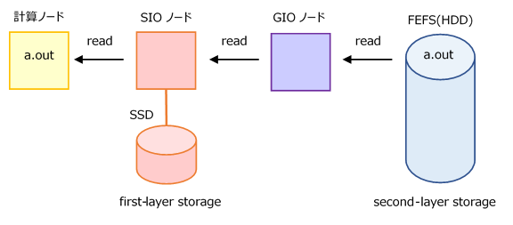
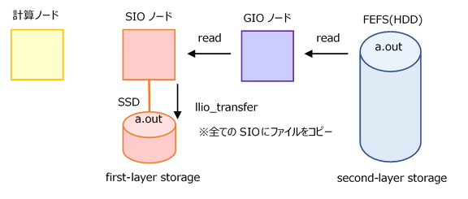
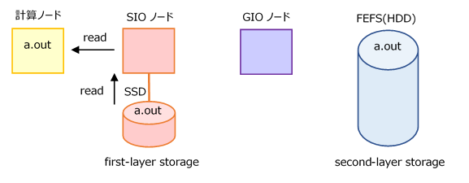
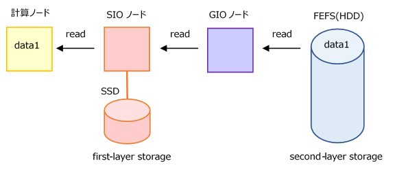
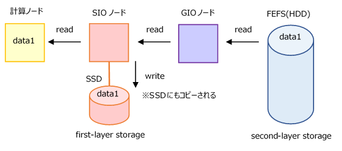
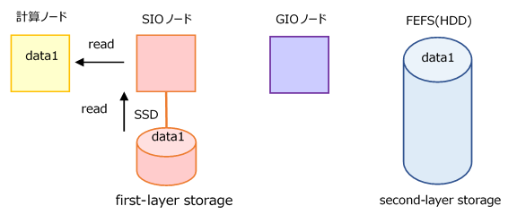
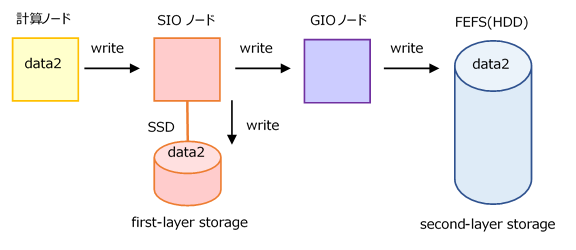
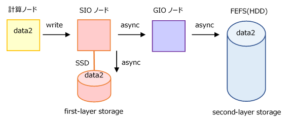

8.6. 留意事項¶
本環境で提供するLLIOは以下に示す点に留意ください。
以下の制限で利用してください。制限を超えるとENOMEMでエラーになります。（制限事項）
ジョブが同時にopenする最大ファイル数は、LLIOが提供する3つの領域の合計で、
1,024 * (ジョブが使用する計算ノード数)以下にする
同一のファイルを複数の計算ノードからopenする場合は、計算ノード数によらず1ファイルとしてカウント
llio_transferで転送し共有ファイルとして利用する場合は、異なるファイルとしてカウントするため、同時にopenする計算ノード数でカウント
1つのファイルを複数のプロセスから利用する場合、以下の2つの条件を両方満たすようにしなければ、I/Oがスローダウン、またはSIOがダウンする
同一ファイルを利用するプロセスが存在するノード数が7,000以下
- 同一ファイルを利用するプロセスの総数が28,000以下(計算ノードあたりのプロセス数の上限なし)
llio_transferで転送し共有ファイルとして利用する場合は、異なるファイルとして扱います。llio_transferの利用を検討してください。
ノード内テンポラリ領域に作成可能なファイル数は、計算ノードあたり1000万ファイルまで(制限事項)
共有テンポラリ領域のブロック数やinode使用数が取得できません(dfコマンドで出力されません)
第2階層ストレージのキャッシュ領域使用時に異なる計算ノードから以下を同時に実施した場合、LLIO経由でファイルサイズを正しく取得できない場合があります
Node A
Node B
truncate
read
truncate
write
truncate
truncate
第2階層ストレージのキャッシュ領域または共有テンポラリ領域において、以下の動作をする場合があります。
計算ノードAでファイルAを削除または別名に変更した後に再作成した場合、計算ノードBでは、ファイルAのopen(2)が失敗する
計算ノードAで削除または別名に変更したファイルがopen(2)される。
FEFSではこの動作にはなりません。
この仕様は、以下で対処できます。
計算ノードBで、ファイルAをopen(2)する前に、ファイルAの親ディレクトリに対してlsコマンドを実行する。
計算ノードBで、ファイルAをopen(2)する前に、計算ノードAのファイルAの再作成から60秒間待つ。
第2階層ストレージのキャッシュ領域または共有テンポラリ領域使用時にwriteと削除を並行して行った場合、第1階層ストレージ上にファイルデータが残存することがあります(ジョブ終了時に削除されます)
非同期クローズ/同期クローズに記載している "非同期クローズ時の留意事項" も確認してください。
共有テンポラリ領域に、1ファイルあたり sharedtmp-sizeで指定したサイズ以上のファイルを作成する場合はストライプの設定が必要です。ストライプ設定の詳細については、共有テンポラリ領域に対するストライプ設定を確認してください。
以下のオプションは、READ性能に影響を与える場合があるためご留意ください。
cn-cache-sizeオプションは、アプリケーション側のREAD量に対して大きな値を指定していない場合、キャッシュミスやキャッシュの再利用のための処理により性能が悪化してしまうことがあります。
auto-readaheadオプションは、cn-cache-size を十分に大きく取れない場合は、指定をOFFとすることで性能劣化を抑えることができます。LLIO クライアントのキャッシュ量に比べて READ するデータ量が大きい場合にauto-readaheadの設定がONとなっていると、先読みによって必要なデータがアプリケーションが読み込む前にキャッシュから追い出され、結果的にキャッシュミスが多発してREAD性能が悪化してしまうことがあります。
pjsubオプション
--all-mount-gfscacheおよび--no-check-gfscacheは、ジョブスクリプトで指定できません。指定した場合はジョブ投入時にエラーとなりますので、コマンドラインで指定してください。
注釈
（制限事項）は今後の運用状況に応じて変更される場合があります
8.6.1. 高並列ジョブ(1000並列以上)の注意点¶
高並列ジョブを実行する際にファイルのアクセス方法によって、I/Oに時間を要したり、ファイルシステムに高負荷を与える場合があります。 高並列ジョブでファイルI/Oを行う際の注意点を記載します。以下の内容を確認し安全なファイルアクセスを行うようにしてください。
8.6.1.1. ファイルの READ について¶
共通ファイルの事前転送
実行ファイル、入力データ、設定パラメタなどの各ランクから共通して読み込むファイルは、llio_transferを使用して、第1階層ストレージに配置するようにしてください。詳細は、全プロセスから共通ファイルへの一斉アクセスを参照ください。llio_transferについては、共通ファイル配布機能 (llio_transfer)を参照ください。 llio_transferの対象となるファイルは read only のファイルのみです。
llio_transferを使用する場合と使用しない場合の動作は以下のようになります。
llio_transferを使用しない場合 第2階層ストレージから計算ノードまでの間に、SIO,GIOノードを経由します。
llio_transferを使用する場合 llio_transferで、ジョブに割り当てられた全てのSIOに共通して読み込むファイルのキャッシュを作成します。
 各計算ノード(並列プロセス)は、物理的に一番近いSIOにアクセスすることで高速に読み込むことができます。
Read データのキャッシュ
第2階層ストレージから計算ノードへ読み込んだファイルを第1階層ストレージにキャッシュにすることができます。
キャッシュを保存しない場合 キャッシュを保存する場合 (デフォルト)  デフォルトはキャッシュを保存する動作となります。変更方法はジョブ投入時（pjsub --llio）のオプションを参照ください。
各計算ノード(並列プロセス)が同じファイルを複数回読み込む場合に性能が向上する可能性があります。
最初の読み込みは第2階層ストレージからの読み込みとなるため、キャッシュの効果は得られません。
多数のノードから同一ファイルへのアクセスは一つのSIOにアクセスが集中するため、読み込みに時間がかかる場合があります。
全ての計算ノードから読み込むファイルの場合はllio_transferを使用してください。
8.6.1.2. ファイルの WRITE について¶
標準出力/標準エラー出力ファイルへの出力
標準出力/標準エラー出力ファイルは、個別のファイルを指定し、出力先ディレクトリもランク番号によって分けるようにしてください。
例) 1000 ランクごとにディレクトリを変えて出力する指定
mpiexec -stdout-proc ./%/1000R/%j.stdout \ -stderr-proc ./%/1000R/%j.stderr ./a.out詳細はジョブ運用ソフトウェア エンドユーザ向けガイドの以下を参照ください。
「2.3.6.9 mpiexecコマンドの標準出力/標準エラー出力 [FX]」
2021年9月の保守以降、標準出力/標準エラー出力ファイルの出力が0だった場合に空ファイルを作成しない設定(
PLE_MPI_STD_EMPTYFILE=off)がデフォルトになりました。 大規模ジョブ実行時の標準出力／標準エラー出力の指定についてを参照ください。
ディレクトリ配下に作成するファイル数
1つのディレクトリ配下に作成するファイル・ディレクトリの数は、10万個までとしてください。
また同時に作成を行う場合は、次項にあるように、1000個までとしてください。
ディレクトリ配下で同時に作成するファイル数
各プロセスの計算結果を同時にファイル出力する場合、1つのディレクトリ配下に作成するファイルやディレクトリ数を1000個までとしてください。
例えば、4000プロセス並列ジョブの各プロセスから計算結果をファイルに出力する場合は、以下のように出力するディレクトリを分けてください。
～/output/0/0～999 までの出力ファイル 1/1000～1999 までの出力ファイル 2/2000～2999 までの出力ファイル 3/3000～3999 までの出力ファイル
ディレクトリ配下のファイル作成と参照の同時処理
同一ディレクトリに複数プロセスからの標準出力ファイルを出力し、実行ファイルを複数プロセスから読むようなケースで、ファイルシステム全体に高負荷を与える場合があります。
例）
mpiexec -stdout-proc ./file_stdout ./a.out
実行ファイルは、llio_transferでSIOに分散配置してください。
標準出力/標準エラー出力は、"1. 標準出力/標準エラー出力ファイルへの出力" に記載した方法で出力するようにしてください。
ディスクに記載された注意も参照ください。
ジョブで扱うファイル数
高並列ジョブ全体で多数のファイルを扱う場合、1ノードあたりに多数のファイルを扱う場合は注意してください。
留意事項に記載がありますので、内容を十分に確認してください。
非同期クローズ
ファイルクローズ時の書出しを非同期に行う非同期クローズ機能を提供しています。 この機能を使用することで書出し完了を待たされることがなくなりジョブの終了が早くなる効果があります。 デフォルトは同期クローズとなるため、必要に応じて非同期クローズを有効にしてください。
同期クローズ（デフォルト） 同期クローズは、クローズ終了の時点で、第1階層および第2階層ストレージへの書出し終了を保証します。
プログラムは、ファイルをクローズする際に第2階層ストレージへの書出し完了を待たされます。
非同期クローズ 非同期クローズは、第2階層ストレージへの書き出しだけでなく、第1階層ストレージ（SIO 上の SSD）への書き出しを待ち合わせません。第1階層ストレージへの書き出しも含めて非同期に行われます。
- ジョブの終了は、第2階層ストレージへの書き出しが完了してから行われます。(書き出しがジョブ終了後も継続することはありません。)ただし、ジョブの実行時間制限を超過した場合や、ノードダウンなどでジョブが異常となった場合、第2階層ストレージへの書き出しは打ち切られます。
第2階層ストレージへの書き出しに失敗した場合は、標準エラー出力に未書出しファイルの一覧が出力されます。
非同期クローズは、
--llio async-close=onで有効にします。非同期クローズの詳細については、非同期クローズ/同期クローズを参照ください。
8.6.1.3. 第2階層ストレージへの直接アクセス¶
第1階層ストレージの利用において制限事項に抵触する場合やキャッシュの活用で効果が得られないなどの場合は、計算ノードから第2階層ストレージに直接アクセスできる/2ndfsを使用してください。 ただし、容量はデータ領域などのようには拡大できないため注意してください。
/home,/vol0n0m/data へのアクセス
/2ndfs へのアクセス
8.6.2. MPI-IO¶
1つのファイルを複数のプロセスから利用する場合の留意事項を確認したうえでご利用ください。
注意
第2階層ストレージのキャッシュ領域でのMPI-IOの利用は、キャッシュを有効に使えず、非同期に書出せない仕様です。 性能については、性能情報「Performance of File System」をご参照ください。